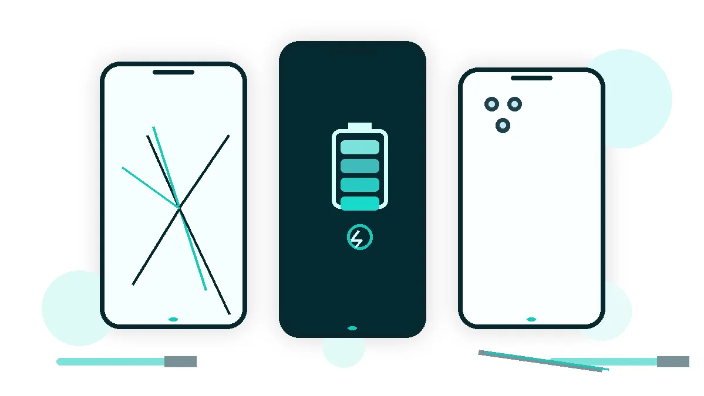

Phone Repairs
Samsung Phone Repairs Brisbane

Samsung Galaxy screen repair, AMOLED display replacement, battery replacement, USB-C charging port repair, back cover, camera and water damage checks. Book online or find a TECHM8 store.
TECHM8 helps customers searching by fault or by Samsung Galaxy model, including Galaxy S, Galaxy A, Galaxy Note, Galaxy Z Flip and Galaxy Z Fold repairs.
Samsung repair services available at TECHM8
- Samsung screen replacement, AMOLED replacement, LCD replacement and touch screen repair.
- Samsung battery replacement, no-power checks, overheating diagnosis and battery drain support.
- Samsung USB-C port repair, charging dock repair, no-charge diagnosis and moisture warning checks.
- Samsung back cover replacement, rear housing checks, frame damage inspection and rear camera glass repair.
- Rear camera repair, front camera repair, camera lens glass repair and camera app black screen checks.
- Speaker repair, microphone repair, button repair, vibration fault checks and water damage assessment.
Samsung Galaxy models we can assess and repair
- Galaxy S26, S25, S24, S23, S22, S21, S20, S10, S9 and older Galaxy S models.
- Galaxy A17, A16, A15, A14, A56, A55, A54, A53, A52, A36, A35, A34, A33, A32, A26, A25, A24, A23, A22, A73, A72, A71 and older Galaxy A models.
- Galaxy Note20, Note10, Note9, Note8, Note Fan Edition and older Galaxy Note models.
- Galaxy Z Flip7, Z Flip6, Z Flip5, Z Flip4, Z Flip3 and Galaxy Z Flip.
- Galaxy Z Fold7, Z Fold6, Z Fold5, Z Fold4, Z Fold3, Z Fold2 and Galaxy Fold.
Samsung repair FAQs
TECHM8 can assess common Samsung Galaxy faults including screen damage, battery wear, USB-C charging issues, camera faults, back cover damage, speaker and microphone faults, button issues and water damage symptoms.